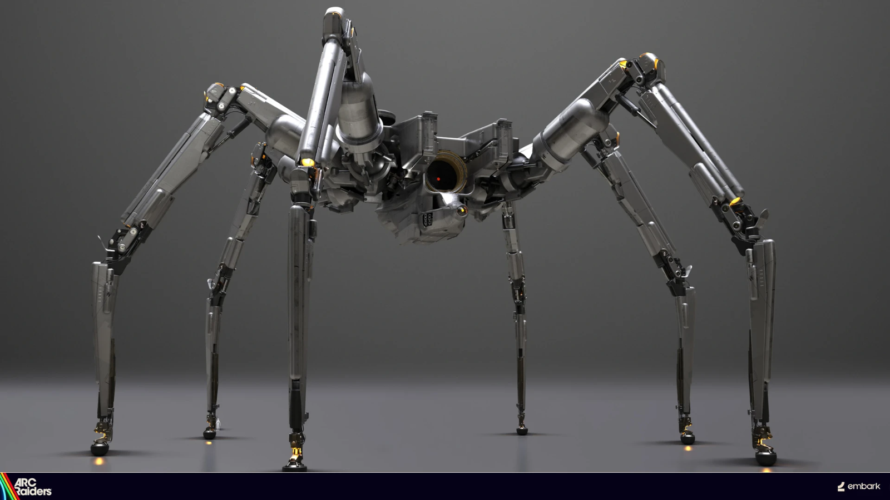

Speranza Ops / Étude de forme / 10 novembre 2026
Comparer le marcheur intact aux volumes et passages de l’épave de Pendola.

Six pattes, épaules cylindriques et orifice central : une référence de construction lisible.
Ce concept n’atteste pas chaque détail du jeu final. Les vues de gameplay servent à vérifier la silhouette.